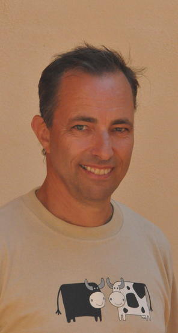

Hans Petter Langtangen
 I enjoy a shared position between Simula Research Laboratory and the University of Oslo, working 100% as a Simula Fellow and being on 80% leave from my university professorship at the Department of Informatics. At Simula, I manage the Center for Biomedical Computing, a Norwegian Center of Excellence 2007-2017. My research there is now mostly focused on cerebrospinal fluid flow in the brain and spine as well as methods for uncertainty quantification. At the University, I am involved in the newly established Centre for Integrative Neuroplasticity and in reforming science education through the world-leading Computing in Science Education project. A significant amount of my time is spent on being the Editor-in-Chief of SIAM Journal on Scientific Computing.
Past activity. Before taking up the professorship at the Department of Informatics in 1999, I worked as an Associate Professor and later as a full Professor of Mechanics at the Department of Mathematics, University of Oslo. I have worked part-time at the Department of Scientific Computing, Uppsala University (1999-2002); SINTEF Applied Mathematics (1991-1997); Physics of Geological Processes (2003-3007), a Norwegian Center of Excellence; and Numerical Objects (1997-2003), a company that commercialized the Diffpack software, which I spent much time on developing in the 1990s. My formal education is from the University of Oslo, with MSc and PhD degrees in Mechanics. My CV has more details.
|
|